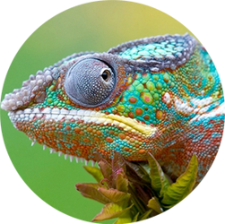

1994
«Было время — я был один, и мое рабочее место находилось в подвале. Теперь со мной целая команда, у нас удобный офис и филиалы в разных странах мира».
Игорь Данилов
Dr.Web – один из первых антивирусов в истории.
Dr.Web вряд ли был бы создан, если бы до этого не возникли первые вирусы, которые, в свою очередь, не появились бы, не будь для них среды существования – то есть, компьютеров и компьютерных сетей.
По случаю дня рождения антивируса Dr.Web, который мы отмечаем в апреле, предлагаем вам совершить небольшой экскурс в историю и вспомнить вирусных и антивирусных «пионеров», оставивших яркий след в скоротечной и насыщенной событиями компьютеризации нашего общества. Они были первыми – в самых разных ипостасях, с самыми разными намерениями и зачастую намного опережали свое время!
Идею самовоспроизводящихся программ изложил «отец» компьютера Джон фон Нейман. Материалы лекций на эту тему, которые он читал начиная с 1949 года, Нейман обобщил в научном труде «Теория самовоспроизводящихся автоматических устройств» более 60 лет назад – в 1951 году.
1951
1970
«Компьютерный вирус»
Появление термина «компьютерный вирус» было неизбежно. Кто употребил его первым – сказать сложно. Есть мнение, что впервые он применен в фантастическом рассказе писателя и ученого Грегори Бенфорда «Человек в шрамах», опубликованном в 1970 году. Здесь слово «вирус» употреблено по отношению именно к компьютерной программе. Кстати, в этом же рассказе упоминается и программа борьбы с вирусом – «Вакцина»!
1961
В 1961 году была создана игра Darwin, в которой несколько программ, названных «организмами», загружались в память компьютера. Организмы одного вида, созданные одним игроком, должны были уничтожать представителей другого вида и захватывать жизненное пространство.
1971
В 1971 году появилась первая программа, которую можно считать вирусом в современном понимании - The Creeper. Она не причиняла вреда, а лишь выводила сообщение на экран:
I`M THE CREEPER ... CATCH ME IF YOU CAN
Но она уже умела самостоятельно распространяться по сети, став первым сетевым вирусом в истории.
Она же породила и первый антивирус — программу Reaper, являющуюся по сути таким же сетевым вирусом — Reaper распространялась по сетям, никак себя не проявляя, а если ей удавалось найти на компьютере The Creeper — она его стирала.
А это уже серьезно
1981
Первыми известными настоящими вирусами являются Virus 1,2,3 и Elk Cloner для ПК Apple II – того самого будущего «мака», вирусов для которых, якобы, не существует. Оба вируса появились в 1981 году.
Первая эпидемия
1987
К середине 80-х годов широкое распространение получили компьютеры IBM PC, что стало одной из причин возникновения вирусных эпидемий.
Первой эпидемией компьютерных вирусов можно считать произошедшую в 1987 году эпидемию достаточно безвредного вируса Brain, который за год своего существования поразил множество компьютеров по всему миру, хотя изначально создавался для определения уровня компьютерного пиратства в Пакистане.
1980
В дипломной работе по теме «Самовоспроизводящиеся программы», подготовленной студентом Дортмундского университета Юргеном Краусом в 1980 году, наряду с теоретическими выкладками перечислялись и реально существовавшие на тот момент самовоспроизводящиеся программы для компьютера Siemens.
Ясное определение термина «компьютерный вирус» было дано в 1983 году американцем Фредом Коэном, на тот момент - аспирантом Университета Южной Калифорнии:
1983
«Мы определяем компьютерный вирус как программу, которая может “инфицировать” другую, внедряя в нее свою копию. Инфекция может распространяться через ЭВМ или сеть... Каждая инфицированная программа может вести себя как вирус, благодаря чему инфекция распространяется».
Фред Коэн, «Компьютерные вирусы, теория и эксперименты»
1988
В 1988 году была разработана первая версия отечественного антивируса Aidstest. Автор этой легендарной программы – Д.Н. Лозинский. Она использовалась практически на всех персональных компьютерах в СССР, а затем в странах СНГ, оставаясь вне конкуренции долгие годы. Разработка Лозинского помогла многим пользователям, в частности в государственном и коммерческом секторах, справиться с вирусной проблемой на начальном этапе ее появления. Сегодня Д.Н.Лозинский является заместителем генерального директора «Доктор Веб».
Дмитрий Николаевич Лозинский – один из тех, кто определил развитие отечественного программирования и стоял у истоков первых российских антивирусных решений.
В СССР у истоков компьютерной вирусологии (с 1989 года) стоял Н.Н. Безруков. Тематика его семинара «Системное программирование» и электронного бюллетеня «Софтпанорама» в значительной степени была посвящена вопросам компьютерной вирусологии. Там были представлены разработчики тогдашних отечественных антивирусов, включая Д.Н. Лозинского.
1989
1991
Позже Н.Н. Безруков написал фундаментальный труд «Компьютерная вирусология», который вышел в 1991 году и оказал большое влияние на Игоря Данилова.
Автор антивируса Dr.Web — Игорь Данилов — начал свои антивирусные эксперименты в 1990-1991 годах. Именно тогда были созданы прототипы сторожа и сканера.
В 1992 году была разработана первая версия антивирусной системы Spider’s Web, включавшая в себя резидентный сторож Spider и доктор (сканер) Web.
Именно доктор Web впоследствии (в 1994 году) дал всему семейству антивирусных программ Игоря Данилова название, ставшее известным на весь мир - Dr.Web.
1994
«Было время — я был один, и мое рабочее место находилось в подвале. Теперь со мной целая команда, у нас удобный офис и филиалы в разных странах мира».
Игорь Данилов
В начале 1990 года появился первый полиморфный вирус — Chameleon. Ранее общепринятым способом опознания конкретного вируса было выделение характерной фиксированной части его кода (сигнатуры). Даже шифрованные с переменным ключом вирусы могли быть опознаны по коду расшифровщика. Однако с появлением полиморфных вирусов это стало невозможно. Подобные вирусы используют несколько методов изменения своего кода, так что разные экземпляры одного вируса не имеют ни одного характерного участка кода.
Когда «полиморфы» стали распространяться массово, Dr.Web стал первой в истории антивирусной индустрии программой, способной распознавать и излечивать компьютеры от самых разных полиморфных вирусов, в том числе сложнейших из них. Именно это технологическое свойство антивируса Dr.Web принесло ему первую международную известность в среде профессионалов.
